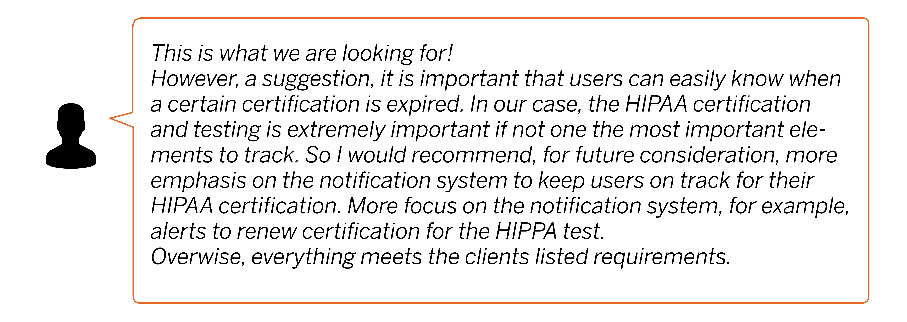

For my internship at ASM Research, I worked on a 4-month project with the UX team to design a website under one of ASMR’s major departments, MEDCHART( Medical Electronic Data Care History and Readiness Tracking). I designed an E-University to centralized a learning space at MEDCHART by providing direct lessons and official government required assessments in one space. The contract had not officially started, so we were unable to performance formal user surveying and interviews. However, with the resources we obtained, we underwent a UX design process to create a Mid-Fidelity prototype to propose to head of MEDCHART.
My Team
Year & Duration
Tools
My Roles
Overall Process
• 1) Research • 2) Identify Problem Areas and Solutions • 3) Ideation & Sketching • 4) Low Fidelity • 5) Prototyping • 6) Validation
Research
Client Requirements
Army National Guards (ARNG)
Army Reserve
To maximize the efficiency of MEDCHART application usage.
1. Currently no electronic system that provides MEDCHART users access to CBT
2. The current HIPAA CBT system is restricted to HIPAA CBT training and does not support CBT expandability.
Trainee User
Managerial Controls
User Surveying on ASM-U and other similiar tools


"Problem Scope" and Goal
"Problem" Many users of similiar tools address the issue of redundant and unnecessary pages which contributed to the confusion of navigation.
Take Away A E-University should be geared to one user. The navigation from starting to completing a course should be clear and easy to follow through.
Goal
Ideation
To lay out the foundation of the website, I created a high level journey map which portrays the journey of the superusers: National Army Guards and the AMRG to visualize the general navigation of the site.
Since we were not redesigning a pre-existing website, we left out some of the user testing portions of the traditional journey map and laid out possible thoughts the user may to create a more realistic sense to the journey map.

Information Architecture
With a general 4-step flow of the user's journey through the website, we began to settle on the physical pages that would correspond to each major stage of the journey map.
Using sticky notes, I used the card sorting method to layout each level of the information architecture. With a tree structure the top four notes were the 4 phases. As the tree branched out, each level was narrowed to be more specific. 1st row: Main pages, 2nd row: Components, 3rd row: Features.
Iterative Design Process

Next, with the main pages settled, the our team decided on the best layout for each page. For the landing page, we decided on a two-column layout one with summarization of information and the other with more detailed information.


Review from Manager
With the completion of the mid-fidelity prototype, My internship was coming an end. To conclude my portion of contribution to the MEDCHART-U website, I presented my work to the head of the MEDCHART department for critisim and feedback.
Reflection
Design is vital and sometimes it is an undermined step in the world of developement. There were definitely moments of frustration in which I didn't know how to progress my design with the strict restrictions placed on it. However, iteration after iteration and close analysis I was able to find a design that suited the situations. A design which satisfied the client and governmental requirement yet provided the most usabilty to the users.
Final Product: MEDCHART-U Mid Fidelity Prototype